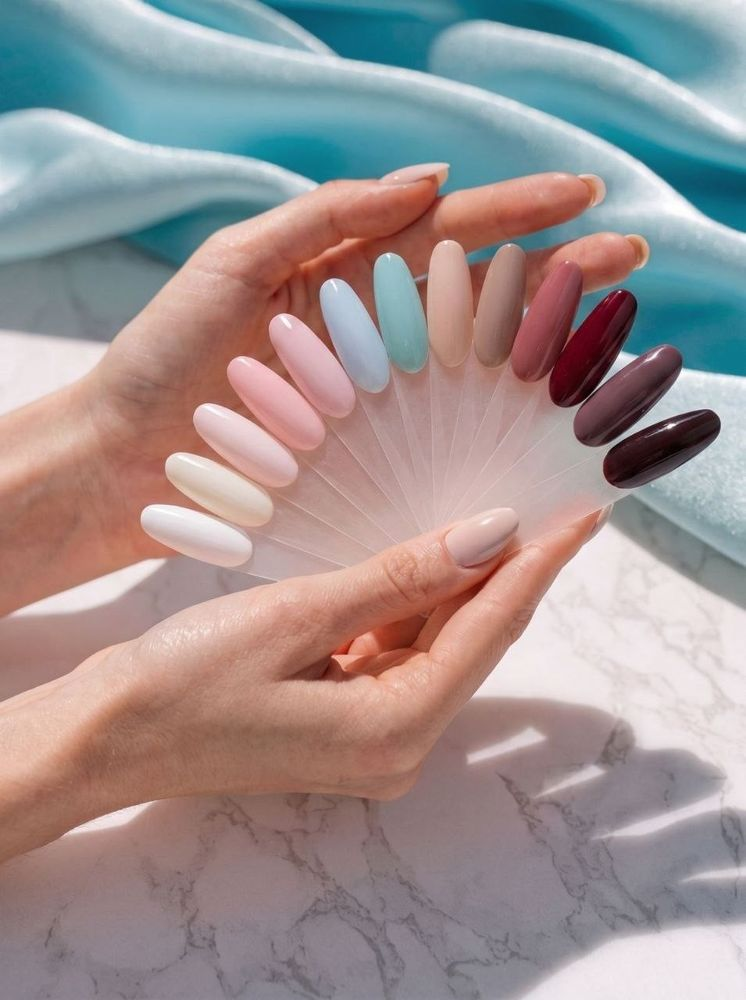
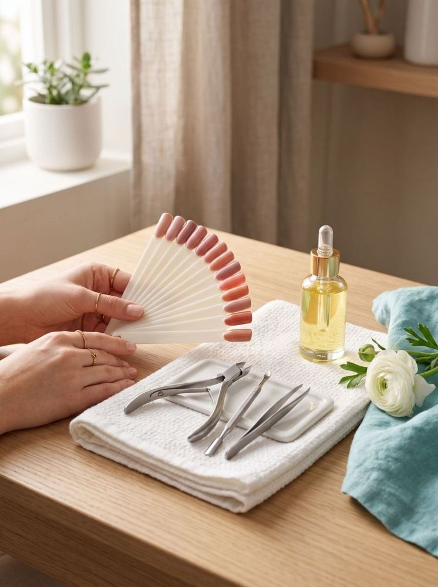
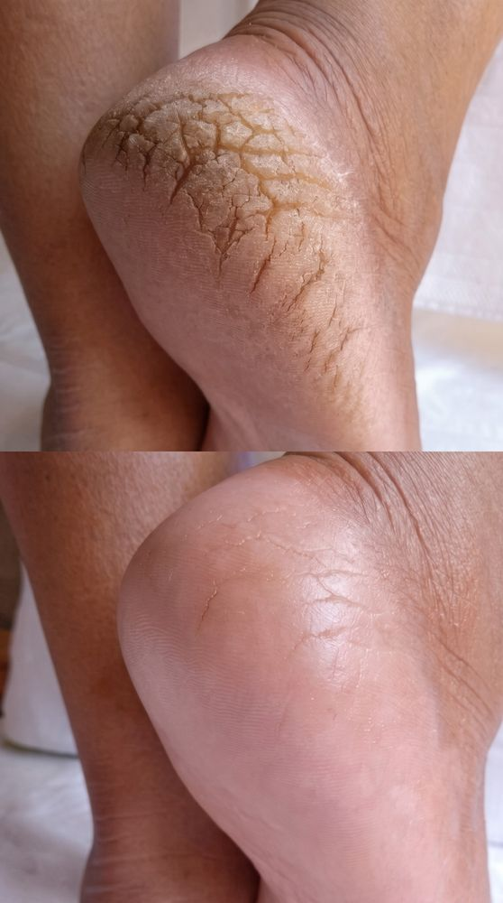

Маникюр
Аппаратный и комбинированный маникюр, покрытие гель-лаком, мужской и японский маникюр, наращивание.
от 20 BYNМинск · Уручье
2 минуты пешком от метро Уручье · Городецкая 11/1 · есть парковка
Кабинет Татьяны Горбуновой — уютная студия, где спокойно и по-домашнему тепло: аккуратный маникюр, педикюр и бережный эстетический уход за стопами.

Услуги

Аппаратный и комбинированный маникюр, покрытие гель-лаком, мужской и японский маникюр, наращивание.
от 20 BYN
Обработка стоп и пальцев, смарт-педикюр, долговременное покрытие — аккуратно и бережно.
от 25 BYN
Эстетическая работа с мозолями, трещинами, утолщёнными и вросшими ногтями — без хирургического вмешательства.
от 10 BYNО мастере
Работаю в ногтевом сервисе с 2021 года. Для меня важен не только аккуратный результат, но и здоровье ногтей — поэтому подбираю уход индивидуально и не делаю лишнего.
В кабинете уютная, спокойная атмосфера: можно выдохнуть, выпить чаю и выйти с ухоженными руками и лёгким настроением.
Как это работает
Маникюр, педикюр или уход за стопами — с ценами можно ознакомиться на страницах услуг.
Онлайн через DIKIDI или по телефону. Свободное время видно сразу.
Минск, Городецкая 11/1 — 2 минуты пешком от метро Уручье, есть парковка.
О кабинете
Кабинет находится в Первомайском районе Минска, на улице Городецкой, 11/1 — в двух минутах пешком от станции метро «Уручье». Удобно заехать по дороге домой или в обеденный перерыв.
Сюда обращаются, когда ищут мастера маникюра рядом с метро Уручье, педикюр в Первомайском районе или бережный уход за стопами. Здесь по-домашнему уютно: тихо, без очередей и лишней суеты, можно спокойно поговорить или помолчать в тишине. Есть парковка, а запись открыта онлайн — можно выбрать удобное время заранее.
Вопросы
Минск, улица Городецкая, 11/1. Две минуты пешком от метро «Уручье», у входа есть парковка.
60–65 BYN. Обработка без покрытия — 20 BYN, японский маникюр — 30 BYN, наращивание — 70–75 BYN. Полный прайс — на странице услуг.
Да: обработка стоп и пальцев, смарт-педикюр и долговременное покрытие. Обработка стоп с пальцами и покрытием — 65 BYN.
Выполняю эстетическую обработку мозолей, трещин, утолщённых и вросших ногтей без хирургического вмешательства. Если есть медицинские показания, лучше сначала проконсультироваться с врачом.
На покрытие действует гарантия 14 дней: если что-то пойдёт не так, исправлю бесплатно.
Как добраться
Минск, Городецкая 11/1 — 2 минуты пешком от метро Уручье. Ниже карта: можно сразу сориентироваться и построить маршрут.
Выберите удобное время в календаре — запись займёт меньше минуты.